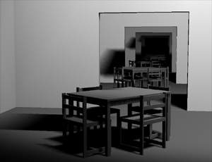
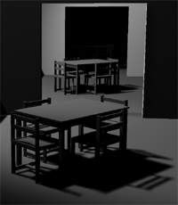
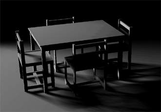

technique of generating PENUMBRA SHADOWS
(September 2004)

Images from scene10.mgf (using accumulation buffer).
Soft shadows vs Penumbra shadows
Penumbra shadows are physically correct shadows from area lights.
They have penumbra.
Soft shadows are hard shadows with blurred edges.
They don't simulate penumbra.
At the time of writing this article, I called penumbra shadows "correct soft shadows", but it's confusing.
Technique overview
Penumbra shadows are created by overlapping multiple soft shadows. Soft
shadows are created by shadow mapping with bilinear filtering.
-> This is not new technique, just demonstration, that it works and
that it's faster than more complex approaches.
Although not fully visible, scene contains 100 rooms, 83k triangles and
167k vertices. There are no optimizations, whole scene is processed in
each frame. On GF4 Ti 4200, 1152x864x32, scene with arbitrarily moving
linear light (6 spot lights) is rendered at 16fps (up to 80fps when
parts of scene get outside viewport).
Current implementation is based on nVidia proprietary OpenGL extensions
(requires GF3 or higher). Future versions may work on any OpenGL 2.0
card.
Advantages
Speed (fastest technique for lower quality shadows, probably not
fastest for high quality solutions).
Simplicity.
Converges to correct solution.
Easy control over speed/quality (from extremely fast/blurred hard
shadows to very slow/nearly correct penumbra shadows).
Disadvantages
Banding artifacts appear without accumulation buffer - low bits
of color are lost. Images on this page were captured with accumulation
buffer, which is much slower on GF4Ti 4200, but probably equally fast
on new hardware. In case that accum has high penalty even on new
hardware,
blending could be improved to reduce artifacts.
Edges are often visible inside penumbras. It's easy to add more
pointlights, but then speed is lost.
Sometimes jagged shadow edges appear (caused by shadow mapping,
reduced by bilinear filtering and overlapping).
Sometimes light or shadow appears near polygon edge (caused by
shadow mapping).
Sometimes thin shadow pattern appears on lit faces (caused by
bilinear filtering of shadow map).
This mostly fixed-pipeline implementation may cause errors in
light attenuation which can be demonstrated on special scene. Problem
is not visible in common situations and will be fixed in next version
using programmable pipeline.
Btw, there is trade between 2. which can be solved by decreasing shadow
map resolution and 3., 4., 5. which can be solved by increasing shadow
map resolution. Everything can be traded for speed (increased shadow
map resolution, increased number of pointlights, accumulation buffer).
Conclusion
Most realtime algorithms aim not to provide absolutely exact solutions,
but to fool human brain to believe it's exact.
Existing artifacts make this technique unsuitable for artificial
environments with large geometrically simple blockers and planar
receivers where human brain easily predicts shape of shadows and
perceives even tiny intensity fluctuations as errors. On the other
hand, natural environments with complex non planar geometry make tiny
errors much harder to spot and make this technique optimal.